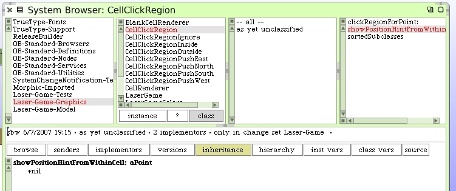
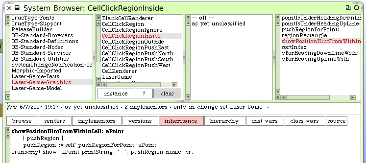
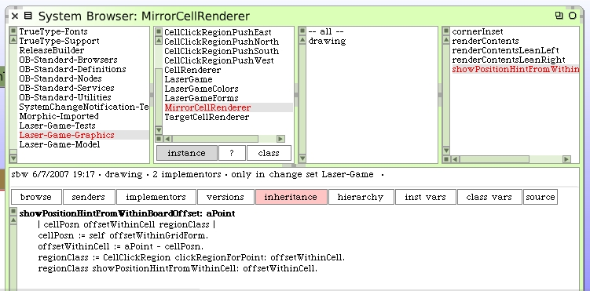
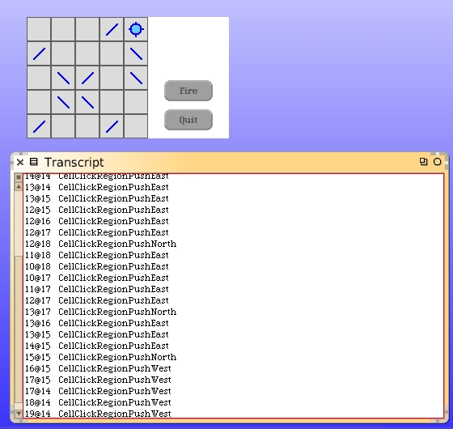

Knowing the push region allows us to display the visual "hint" as we move the cursor around inside our game board. We need a new method on CellClickRegion to handle the position hint message.
The basic cell click region will ignore the request. The inside cell click region will respond.
We can re-use the code pattern from before to log the hint on the Transcript for now. Eventually we will draw our arrows. The hook to send this message needs to be added. Back to the mirror cell renderer.
There we have it. When we move the mouse around inside the mirror cells we can see the name of the push hint appear in the Transcript window.
Note that moving the pointer around inside blank cells and the target cell produces no hints messages.